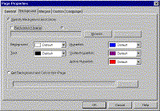
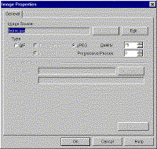

|
| ||
|
| ||
Brought to you by Inside Microsoft FrontPage, a ZD Journals publication. Click here for a free issue  .
.
When you apply a FrontPage theme to a page, one of the elements added is a background pattern. This background can add color and interest to the page with very little expense in terms of download times.
However, you don't have to use themes to take advantage of backgrounds. Plus, if you add a background yourself, you can take advantage of a feature that themes don't offer: watermarks. We'll show you how to create your own backgrounds and watermarks in this quick tip.
When you create a page in FrontPage, the background is set to show the browser's default color, which is usually white or gray. To change the color, right-click on the page and choose Page Properties . . . from the context menu. Switch to the Background tab of the dialog box, as shown in Figure A.

Click image to enlargeFigure A. You can change page backgrounds in this dialog box
Since you can't control the default color, we recommend that you always specify a background color, even if it's white, unless you specify a background pattern. Now, let's look at how you can specify a pattern.
In the Page Properties dialog box, enable the Background Image check box. Next, type the pathname for the image you want to use or click on the Browse . . . button to browse to it.
As with all Web graphics, the image must be either a GIF or JPG file. In addition, the image must be designed as a repeating pattern. Otherwise, you'll see an ugly tiling effect on the page.
If you installed the supplemental art that ships with Image Composer, you can choose from several background images. They're located in the directory c:\MultimediaFiles\Graphics\Web\Backgrounds\ Microsoft Image Composer. These files are in MIC format, however, so you'll need to open them first in Image Composer, then save them as GIF or JPG.
A background image is tied to the page, which means that when the user scrolls up or down on the page, the background scrolls as well. A watermark, on the other hand, is fixed and doesn't scroll.
To turn a background image into a watermark, simply enable the Watermark check box in the Page Properties dialog box. (Note: the pattern will still scroll in FrontPage Editor's Normal mode; however, it will remain stationary in the browser.)
Once you've specified a background image or watermark, you can click on the Properties . . . button to access the Image Properties dialog box, shown in Figure B. Here, you can change the file format or launch your image editor to edit the file.

Click image to enlargeFigure B. You can change the background image's attributes in this dialog box
Copyright © 1998, Ziff-Davis Inc. All rights reserved. ZD Journals and the ZD Journals logo are trademarks of Ziff-Davis Inc. Reproduction in whole or in part in any form or medium without express written permission of Ziff-Davis is prohibited.
Did you find this material useful? Gripes? Compliments? Suggestions for other articles? Write us!
© 1999 Microsoft Corporation. All rights reserved. Terms of use.